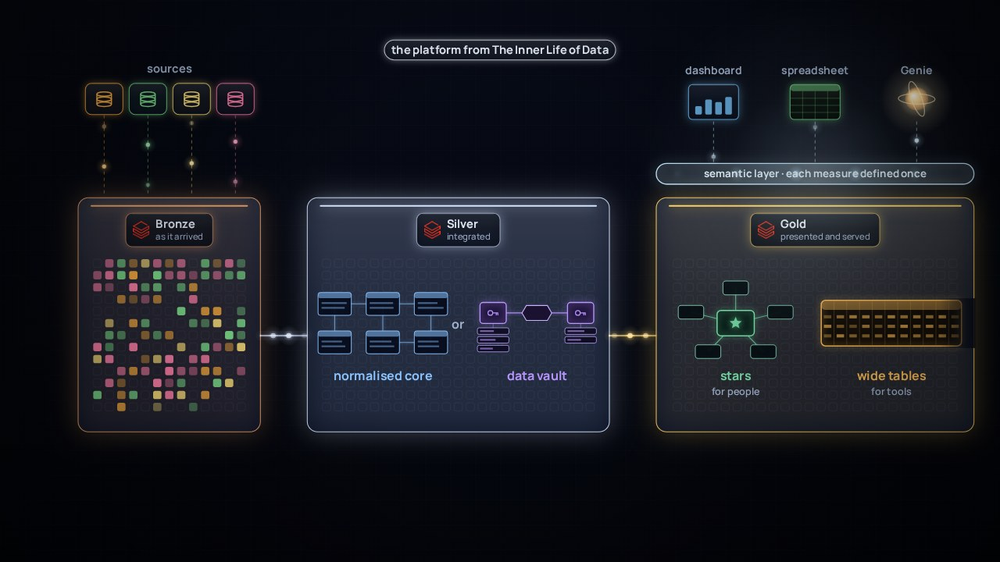

← Anterior · Película 2 de 7
Más antiguo que los sistemas
Arcilla, cera, papel, una clave digital: cambiaron los materiales, no la idea. Modélala una vez, y mide cada sistema con ella.
Temas › De las palabras a los datos
Ocho situaciones sobre escribir y leer: una copia que se pasó por alto, medio título, un informe en la mañana más ocupada, la historia sobrescrita. Decide qué harías; cada respuesta explica por qué. Tus respuestas quedan en este navegador.
Película 3 de 7.
← Anterior · Película 2 de 7
Arcilla, cera, papel, una clave digital: cambiaron los materiales, no la idea. Modélala una vez, y mide cada sistema con ella.

Siguiente · Película 4 de 7 →
¿Estrella, vault o una sola tabla ancha? Cada forma tiene un trabajo y un lugar. Elige según la pregunta, no según la moda.